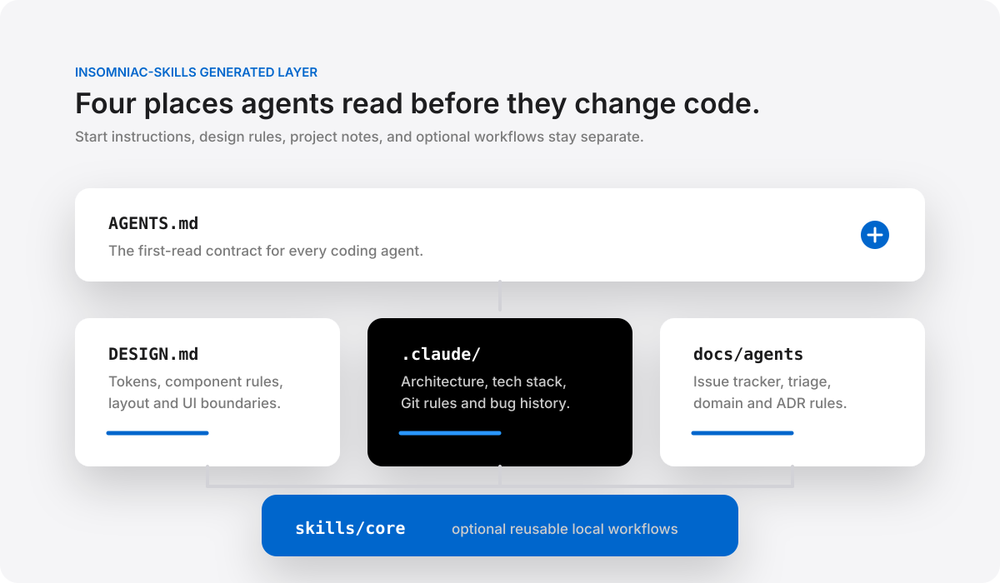

CLI for Agent project docs
Set up the docs agents need before they code.
Run one command to add AGENTS.md, DESIGN.md, .claude notes, agent operating docs, and optional skills to any repo.
Files added to your repo
no overwrite by default
Install
Run it once with npx, or install it as a command.
Use npx for one-time setup, or install globally to get init-agent-docs in your terminal. The npm wrapper runs the Python initializer, so the machine needs python3.
npx -p insomniac-skills init-agent-docs --helpnpm install -g insomniac-skills
init-agent-docs --project-name my-projectnpm install -D insomniac-skills
npx init-agent-docs --with-design --with-agent-opsWhy these files
Agents work better when repo instructions are clear and close to the code.
AGENTS.md
Tell agents how to work in this repo.
Put the project goal, must-read docs, validation rules, and collaboration norms in one first-read file.
DESIGN.md
Give UI work a shared visual standard.
Document colors, type, spacing, components, and design boundaries before agents change screens.
.claude/
Keep lasting context out of chat.
Store architecture, tech stack, Git rules, skill authoring notes, and bug-fix history where future agents can read them.
docs/agents
Make agent process visible.
Add issue tracker notes, triage labels, domain reading order, ADRs, and skill usage rules when the project needs them.
Command flags
Copy a command, then adjust the flags for your repo.
Existing files are protected by default. Use dry-run to preview changes, and use force only when you want to overwrite files.
| Option | Default | Purpose |
|---|---|---|
--target TARGET | . | Choose the repo or folder to update. |
--project-name PROJECT_NAME | target folder name | Set the project name shown in generated docs. |
--description DESCRIPTION | generic project description | Add a short project description to the docs. |
--template-dir TEMPLATE_DIR | bundled templates | Generate docs from your own template folder. |
--skills-dir SKILLS_DIR | bundled skills | Load skill profiles from your own skills folder. |
--with-skills PROFILE_OR_SKILL | off | Copy a skill profile or a named skill into .agents/skills/. |
--with-agent-ops | off | Add docs for issue tracking, triage labels, domain notes, ADRs, and skill usage. |
--with-design | off | Add DESIGN.md so UI changes have a shared design reference. |
--issue-tracker | manual | Set the issue tracker style: auto, github, gitlab, local, or manual. |
--domain-layout | single | Choose how domain notes are organized: single, multi, or claude-only. |
--list-skills | off | List available skill profiles and skills, then exit. |
--date DATE | today | Set the date written into generated docs. Use YYYY-MM-DD when possible. |
--force | off | Overwrite files that already exist in the target repo. |
--dry-run | off | Preview the files that would be written without changing anything. |
Repo structure
Each file has one job, so agents know where to look.
AGENTS.md tells agents how to start. DESIGN.md tells them how UI should look. .claude stores durable project notes. docs/agents describes operating process. skills/core stays optional.

Optional skills
Install workflows only when a repo needs them.
Skills are not copied by default. Use --with-skills core for the full set, or pass one skill name to install only that workflow.
agent-docs-bootstrap
Create or repair the main agent docs using only facts found in the repo.
template-maintainer
Keep templates, README examples, architecture notes, and CLI behavior in sync.
skill-author
Write or review skills with clear triggers, steps, validation, and safety limits.
bug-fix-recorder
Record what broke, why it broke, how it was fixed, and how the fix was verified.
repo-onboarding
Give a new agent a fact-based tour of files, entry points, tests, and risks.
security-boundary-review
Check scripts, installers, publishing, credentials, network calls, and unsafe writes.
release-packaging
Review package contents, release layout, installer behavior, and post-install checks.
agent-handoff
Summarize paused or completed work so another maintainer can continue without guessing.
Open source ready